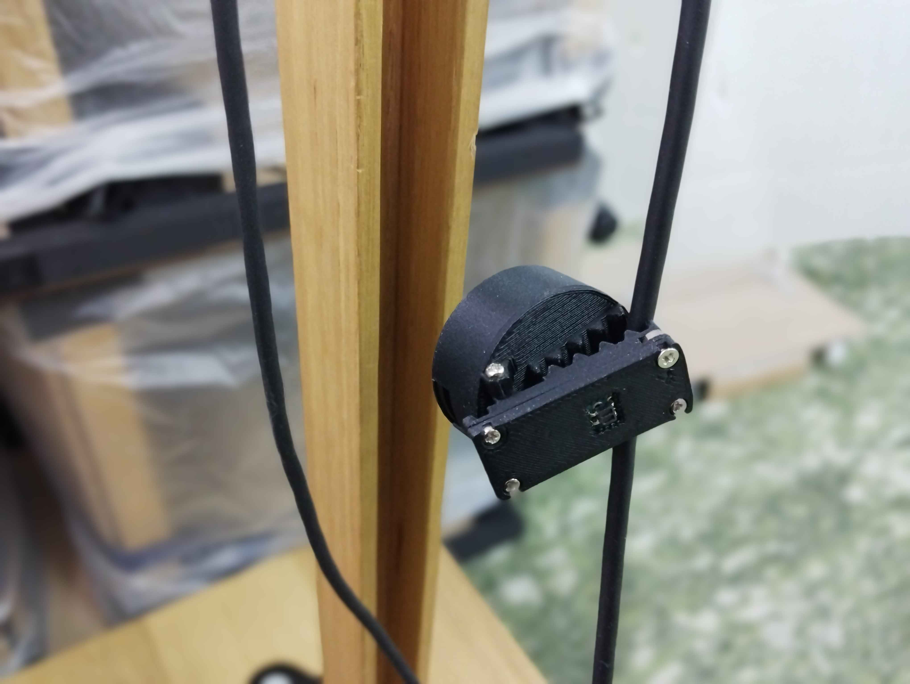

Programmable Ball
OverView
Programmable Ball(PB)は、現実の物体のコリジョン（衝突）を計算機にて保存・処理することを目的に開発。


Concept
仮想世界では物体のコリジョンを取得し、その強度を用いてインタラクション設計が様々に考えられる、一方で物理世界でこれらのセンシング及びそれらを用いたアプリケーションを開発するための最小構成単位を持ち得る適当なコンピュータは少ない。本デバイスは卓球ボールに収まるサイズ（Φ30mm）に設計するために、NORDICのSoCであるnRF52840(ARM®の32ビットCortex™-M4 CPUを中心に構築)を搭載した自作基板となっている。給電はType-Cポートを介して行われ、充放電機能かつリポバッテリーを搭載しているため、スタンドアロンで動作可能。
Future Work
本デバイスはいくつかのアタッチメントと組み合わせることで様々な用途に利用可能である。例えば髪止め（眼鏡固定）可能フォトリフレクタ内臓モジュールと接続することで、こめかみ部の隆起を計測し咀嚼検知をおこなえる。今後はPOV(バーサライタ)に対応するべく作成したLED基板と組み合わせることを考えている。
咀嚼検知アタッチメント
自作HD107S搭載LED基板
Exhibition
Tools
- Arduino(Platform IO) - 開発環境
- Ealge（回路設計）- 加速度/マイコン周り/LEDアタッチメント
- Fusion360 - 筐体や咀嚼検知アタッチメント
Credit
- 田井普 - Firmware / Hardware / Circuit
- 高原知明 - Hardware / Circuit
Production Time
- 制作日時：2024年3月-2024年5月
- 製作期間：2ヶ月